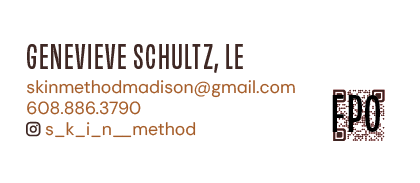
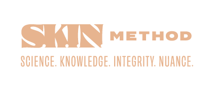
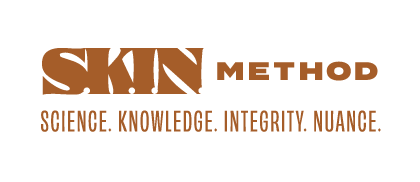
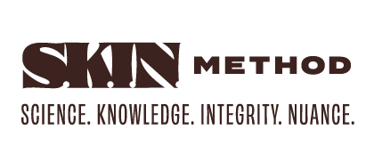

Updated 09.04.26

All current S·K·I·N· Method logo files, in every format you'll actually need — PNG, SVG, EPS, and PDF.
The full lockup — stacked wordmark, tagline versions, and every approved color combination.
Go to downloads ↗For tight vertical space — signage, email headers, business cards.
Go to downloads ↗Solid black and solid white versions, for one-color print and stamping. See the note in Logo System below before reaching for these.
Go to downloads ↗Pre-cropped to a 110×110px circle for profile images across platforms.
Go to downloads ↗The tagline on its own, no logo attached — one line and stacked, in every approved color.
Go to downloads ↗A note on file names: the number at the end of a file name (1–6) is just the color it's saved in — those six numbers match the six shades in Color below, pulled from the Fitzpatrick skin tone scale. Everything before that number is just describing what the file is. SM_primarylogo_tagline_6, for example, is the primary logo with tagline, saved in color 6.
Not sure which file to grab? Reach for a PNG first — it's what you'll need close to 90% of the time. Each folder has two sizes: the small one for anything on a screen (email signatures, social posts, docs), and the one labeled "@4x" for anything bigger or higher-resolution, like large print or signage. You'll also see PDF, SVG, and EPS files sitting in each folder. You don't need to know exactly what sets them apart — they're just there in case a printer or vendor ever asks for a specific one by name.
SKIN sits in a bold serif, the one serif in the lockup, so it stands on its own and commands the eye. METHOD anchors it in a clean, grounded sans — the whole thing reads assured rather than ornamental.


On black & white: solid black and solid white one-color versions are downloadable in Downloads above, but they're a fallback, not a first choice. Reach for them only when a platform, vendor, or print method specifically requires single-color art — engraving, one-color screen printing, a fax machine that still exists somewhere. Everywhere else, use one of the full-color combinations above.
Sometimes the tagline needs to stand on its own — a sign-off, a footer, a spot where the full logo lockup would be too much. Two orientations cover most needs: one line for wide spaces, stacked for anywhere narrower. Every color in the system, both orientations.


The palette references the Fitzpatrick scale — the range used to describe skin tone — rather than settling on one shade. S·K·I·N· serves every skin, and the system represents all of it.
A condensed display headline gives the system some edge; a clean, quiet body font keeps everything else easy to read.
Sized for Moo's mini card format — 2.75" × 1.10", a little smaller than a standard card, so it feels considered rather than generic. Two fronts, one per teammate, and six backs — one per Type color from the palette above, each on white stock. Shown to scale below.




| Action | Owner | Timeline |
|---|---|---|
| → Confirm names, titles, email, phone numbers, and handle above are correct | S·K·I·N· | Before print |
| → Weigh in on paper stock and quantity — see Moo's pricing for options | S·K·I·N· | Before print |
| → Prep final print-ready files to Moo's specs | Erin | Once approved |
| → Place the order — Erin can order directly if reimbursed for cost, or hand off the files for S·K·I·N· to order themselves | Both | Before print |
This is Presentation 01: logo concepts and visual direction. Nothing here is final — this is an active conversation. I want your gut reaction, your instincts, what lands and what doesn't. The work gets sharper with honest feedback.
Quick alignment on what Phase 1 covers and what follows.
Three logo directions. Notes on the thinking behind each one. Each will showcase the logo, the logo applied in context, and early exploration of the system — colors, fonts — nothing final.
This is the most important part. What's landing? What's not? What do you want pushed further?
Where we go from here: revision path, timeline, and what I need from you to keep moving.
Phase 1 is the foundation. Everything else builds on what we decide here.
Logo suite, brand system, business cards, bag stamp/sticker, POS receipt logo.
The logo and brand system are the root everything else grows from. Lock these, and the rest follows.
Website, social templates, digital brand guidelines. Scoped separately — kicks off once Phase 1 is locked.
Launch campaign, printed collateral, everything you need to go public with confidence. Scoped separately.
One thing to keep in mind: these look finished, but they're very much not. Nothing here is final or ready for print. Think of them as polished concepts to react to, not decisions that are set in stone.
This direction is about precision you can feel. Every letter is placed with care and works together as a single, considered unit. It mirrors how S·K·I·N· works: nothing arbitrary, nothing rushed, every decision made on purpose.


This direction is science-forward and clinical, on purpose. It treats the brand the way S·K·I·N· treats skin: close attention, real evidence, a clear method. It looks like expertise, because it is.


This direction stands proud, because S·K·I·N· has earned it. Years of experience, real results, and a methodology Rebecca and Genevieve stand behind completely. The identity carries that same self-assurance: it takes up space and doesn't apologize for it.


| Action | Owner | Timeline |
|---|---|---|
| → Share feedback on concepts: gut reactions, what's working, what's not | S·K·I·N· | Done |
| → Revise and refine selected direction (logo suite + colorway) | Erin | Complete — see Brand Hub above |
| → Deliver final logo suite + brand system files | Erin | Complete — see Downloads above |
| → Begin Phase 2 scoping conversation | Both | After Phase 1 approval |
Profile images.